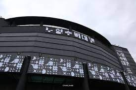

노형 수퍼마켙

제주공항에서 7.3km 떨어진 거리에 위치한 이곳은 자동차로 15분만에 도착 할 수 있었다.
대로 변 바로 옆에 2층짜리 건물외관의 기하학적인 무늬가 뭔가 특별해 보였다.
또한 요즘 가장 핫하다는 미디어아트를 감상할 수 있다.
건물 안으로들어가면 컬러풀한 모습은 볼 수 없고 온통 흑,백색만 존재하는 내부 모습을 확인할 수 있다.
이용시간 : 9:30-19:00 이용요금 : 성인 15,000원 / 청소년 13,000원 / 소인 10,000원 전화 : 064-713-1888
이호테우 해변 말 등대

제주 시내에서 8분 거리에 위치하다 보니 제주시 가볼만한곳으로 손꼽힌다.
해수욕장은 공항과 시내와 가장 인접해 휴가철 피서객들에게 큰 인기를 얻고 몇 년전부터 서핑천국으로 알려지고 특히 말등대는 인싸들의 핫플로 큰 인기를 모으고 있다.